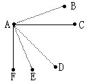
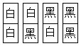
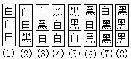
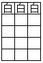

第十三讲 染色中的抽屉原理
根据抽屉原理可以解决许多有趣的问题，关键在于根据不同的问题制造抽屉.如研究整除问题时常用剩余类当作抽屉，研究长度和面积时用图形制造抽屉等等.在这一讲中将研究如何用颜色当作抽屉来解决一些问题。
例1 平面上有A、B、C、D、E、F六个点，其中没有三点共线，每两点之间任意选用红线或蓝线连接，求证：不管怎样连接，至少存在一个三边同色的三角形。
分析与解答 连彩线的方式很多，如果一一画图验证结论，显然是不可取的.这个问题如果利用抽屉原理去解决，就不是难事了。
我们用虚线表示红色，用实线表示蓝色.从任意一点比如点A出发，要向B.C、D、E、F连5条线段.因为只有两种颜色，所以根据抽屉原理，至少有3条线段同色.不妨设AB、AD、AE三线同红色（如右图）.如果B、D、

E这三点之间所连的三条线段中有一条是红色的，则出现一个三边为红色的三角形.如果这三点之间所连线段都不是红色，那么就都是蓝色的.这样，三角形BDE就是一个蓝色的三角形.因此，不管如何连彩线，总可以找到一个三边同色的三角形。
如果我们把上面例题中的点换成人，把红蓝两种颜色连线换成人与人之间的关系，又可以解决某些实际问题.如：证明在任意的6个人之间，或者有3个人互相认识，或者有3人互相都不认识。
我们只需把互相认识的两人用红线连接，互相不认识用蓝线连接，那么所要证明的结论就变成证明存在一个红色或蓝色的三角形了。
例2 从同一个小学毕业的同学之间的关系可以分为三个等级：关系密切、一般关系、毫无关系.请你证明在这个学校的17名校友中.至少有三个人，他们之间的关系是同一个等级的。
分析与解答 把17人看成平面上17个点；用红、蓝、白三种颜色的连线表示同学之间三种不同等级关系.那么这个实际问题就转化为：证明用红、蓝、白三种颜色的线段连接平面上的17个点（没有三点共线），一定存在一个同色的三角形。
因为一个点要与其他16个点连线，只有三种颜色，所以根据抽屉原理，从一点至少引出6条同色的线段.不妨设点A与B、C、D、E、F、G六点是用白色线段连接的.如果B、C、D、E、F、G这六点之间有一条白线连线，那么就会出现一个三边为白色的三角形.否则，这六个点只能用红、蓝两种颜色连接了.根据例1的证明可得，这六个点之间必有一个红色边或蓝色边的三角形存在。
从例2的证明看出，它的论证方法与例1是相似的，只不过比例1多用了一次抽屉原理。
例3 用黑、白两种颜色把一个2×5（即2行5列）的长方形中的每个小方格都随意染一种颜色.证明：必有两列，它们的涂色方式完全相同。

分析与解答 因为每列只有两格，而这两格的染法只有（右图）四种，将这4种染色方式当作4个抽屉，题中所有的方格共有5列，根据抽屉原理，至少有两列的染色方式完全相同。
例4 如果有一个3×n的方格阵列，每一列的三个方格都任意用红、黄、蓝、绿四色之三染成三种不同颜色，问n至少是多少时，才能保证至少有3列的染色方式完全相同。
分析与解答 每一列都从4种颜色中选出三种分别染上这列中的三个小格，染色的方式共有4×3×2=24（种）.若要保证至少有3列的染色方式完全相同，那么n至少是24×2+1＝49。
下面研究另一类长方形阵列小格的染色的问题。
例5 对一块3行7列的长方形阵列中的小方格的每一格任意染成黑色或白色，求证：在这个长方形中，一定有一个由小方格组成的长方形，它的四个角上的小方格同色。
证法1：每一列的三个格用黑、白两种颜色染色.所有可能的染法只有如下图中的八种

如果在所染色的3行7列阵列中某一列是第（1）种方式，即三格均为白色，则其余6列中只要再有第（1）（2）（3）（4）种方式之一（即该列中至少有两个白格），那么显然存在一个四角格都是白色的长方形.若第（1）、（2）、（3）、（4）种方式均未出现，那么其余6列就只能是（5）、（6）、（7）、（8）这四种方式，根据抽屉原理，其中至少有两列染色方式完全一样.又（5）～（8）中每一列至少有两格染黑色，所以一定存在一个长方形，它的四角格颜色都是黑色。
同理可知，如果有一列是第（8）种方式，即三格均为黑色，那么也存在四角同色的长方形。
如果在7列中（1）、（8）两种方式都未出现，则只有（2）、（3）、（4）、（5）、（6）、（7）这六种方式染这7列，根据抽屉原理，至少有两列染色方式完全一样，所以仍然存在四角同色的长方形。
证法2：第一行有7个小方格，用黑白两种颜色去染，根据抽屉原理，至少有四个方格所染颜色相同，不妨设第一行有4个黑方格.再看第二行，如果在第一行的四个黑方格下面的四格中有两格是黑色，则结论显然成立.否则第二行这四个格中至少有3个白色方格。
再看第三行.根据抽屉原理，在第三行的位于第二行的3个白格下面的3个格中必至少有两格同色.如果有两格为白色，则与第二行构成四角白色的长方形；如果没有两格白色，那么必有两格为黑色，则与第一行构成四角黑色的长方形。
例6 用黑、白两种颜色将一个5×5的长方形中的小方格随意染色.求证：在这个长方形中一定有一个由小方格组成的长方形，它的四个角上的小方格同色。
分析与解答 第一行中的5个小方格用黑、白两种颜色去染，根据抽屉原理，至少有3个小方格同色.不妨设第一行的前3个为白格.现在考虑位于这3个白格下面的那个3×4的长方形（如右图），用黑、白两种颜色去染这个3×4的长方形，有以下两种情况：

①若在某一行的3个方格中出现两个白格，则它们与上方第一行相应的两个白格可组成四角同为白色的长方形。
②若在4×3的长方形的任意一行的3个小方格中都不含两个白格，也就是每一行的3个小方格所涂的颜色只有一白二黑或三黑，则只有下面（1）、（2）、（3）、（4）共4种可能.如果（4）出现在某一行中，那么不管
其他三行为（1）、（2）、（3）、（4）中的哪种情况，必有一个四角为黑色小方格的长方形.如果（4）未出现，则在这四行中只能出现（1）、（2）、（3）这3种情况，由抽屉原理可知，必有两行染色方式完全相同，显然这两行中的4个黑色小方格可构成四角同黑的长方形.